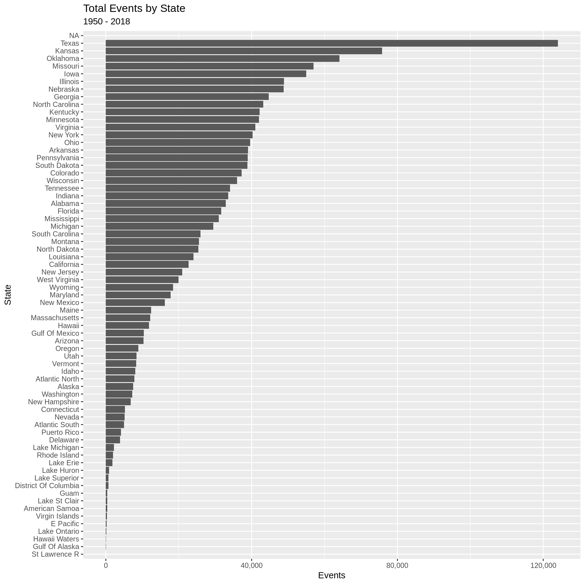
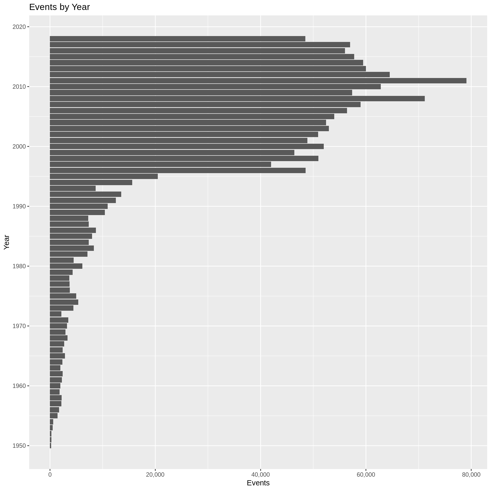
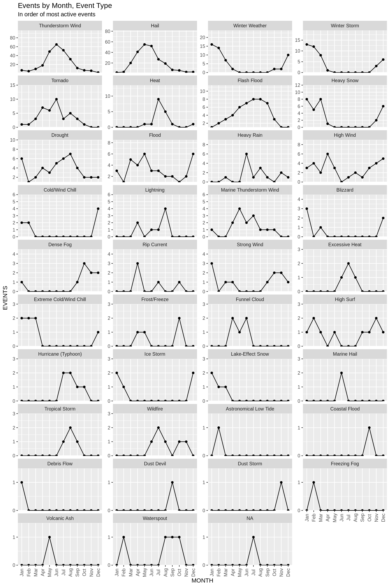

Events by State
Tim Trice
2019-03-03
Last updated: 2019-03-03
Checks: 6 0
Knit directory: ncdc_storm_events/
This reproducible R Markdown analysis was created with workflowr (version 1.2.0). The Report tab describes the reproducibility checks that were applied when the results were created. The Past versions tab lists the development history.
Great! Since the R Markdown file has been committed to the Git repository, you know the exact version of the code that produced these results.
Great job! The global environment was empty. Objects defined in the global environment can affect the analysis in your R Markdown file in unknown ways. For reproduciblity it’s best to always run the code in an empty environment.
The command set.seed(20181114) was run prior to running the code in the R Markdown file. Setting a seed ensures that any results that rely on randomness, e.g. subsampling or permutations, are reproducible.
Great job! Recording the operating system, R version, and package versions is critical for reproducibility.
Nice! There were no cached chunks for this analysis, so you can be confident that you successfully produced the results during this run.
Great! You are using Git for version control. Tracking code development and connecting the code version to the results is critical for reproducibility. The version displayed above was the version of the Git repository at the time these results were generated.
Note that you need to be careful to ensure that all relevant files for the analysis have been committed to Git prior to generating the results (you can use wflow_publish or wflow_git_commit). workflowr only checks the R Markdown file, but you know if there are other scripts or data files that it depends on. Below is the status of the Git repository when the results were generated:
Ignored files:
Ignored: .Rproj.user/
Untracked files:
Untracked: docs/
Unstaged changes:
Modified: .gitignore
Note that any generated files, e.g. HTML, png, CSS, etc., are not included in this status report because it is ok for generated content to have uncommitted changes.
These are the previous versions of the R Markdown and HTML files. If you’ve configured a remote Git repository (see ?wflow_git_remote), click on the hyperlinks in the table below to view them.
| File | Version | Author | Date | Message |
|---|---|---|---|---|
| Rmd | 13466ef | Tim Trice | 2019-03-03 | Add author, date to yaml headers |
| Rmd | a32b0c4 | Tim Trice | 2019-03-03 | Add Events |
library(glue)
library(lubridate)
library(tidyverse)details <-
read_csv(
file = here::here("./output/details.csv"),
col_types = cols(
.default = col_character(),
EPISODE_ID = col_integer(),
EVENT_ID = col_integer(),
STATE_FIPS = col_integer(),
CZ_FIPS = col_integer(),
BEGIN_DATE_TIME = col_datetime(format = ""),
END_DATE_TIME = col_datetime(format = ""),
INJURIES_DIRECT = col_integer(),
INJURIES_INDIRECT = col_integer(),
DEATHS_DIRECT = col_integer(),
DEATHS_INDIRECT = col_integer(),
DAMAGE_PROPERTY = col_number(),
DAMAGE_CROPS = col_number(),
MAGNITUDE = col_double(),
TOR_LENGTH = col_double(),
TOR_WIDTH = col_double(),
BEGIN_RANGE = col_integer(),
END_RANGE = col_integer(),
BEGIN_LAT = col_double(),
BEGIN_LON = col_double(),
END_LAT = col_double(),
END_LON = col_double()
)
)
event_types <-
read_csv(
file = here::here("./output/event_types.csv"),
col_types = cols(
EPISODE_ID = col_number(),
EVENT_ID = col_number(),
EVENT_TYPE = col_character()
)
)Events by state
details %>%
group_by(STATE) %>%
summarise(Events = n()) %>%
mutate(STATE = fct_reorder(STATE, Events)) %>%
ungroup() %>%
ggplot() +
aes(x = STATE, y = Events) +
geom_col() +
scale_y_continuous(labels = scales::comma) +
coord_flip() +
labs(
title = "Total Events by State",
subtitle = glue(
"{min(year(details$BEGIN_DATE_TIME))} - {max(year(details$END_DATE_TIME))}"
),
x = "State"
)
Types of events
event_types %>%
group_by(EVENT_TYPE) %>%
summarise(Total = n()) %>%
mutate(EVENT_TYPE = fct_reorder(EVENT_TYPE, Total)) %>%
ungroup() %>%
ggplot() +
aes(x = EVENT_TYPE, y = Total) +
geom_col() +
scale_y_continuous(labels = scales::comma) +
coord_flip() +
labs(
title = "Event Types",
subtitle = glue(
"{min(year(details$BEGIN_DATE_TIME))} - {max(year(details$END_DATE_TIME))}"
),
x = "Event Types"
)
Events by year
details %>%
group_by(Year = year(BEGIN_DATE_TIME)) %>%
summarise(Events = n()) %>%
ggplot() +
aes(x = Year, y = Events) +
geom_col() +
scale_x_continuous(
breaks = seq(1950, 2020, by = 10),
minor_breaks = seq(1950, 2020, by = 5)
) +
scale_y_continuous(labels = scales::comma) +
coord_flip() +
labs(
title = "Events by Year"
)
Events by type, month
set.seed(10L)
details %>%
sample_n(size = 1000L) %>%
select(EVENT_ID, BEGIN_DATE_TIME) %>%
left_join(event_types, by = "EVENT_ID") %>%
mutate(MONTH = month(BEGIN_DATE_TIME)) %>%
group_by(EVENT_TYPE, MONTH) %>%
summarise(EVENTS = n()) %>%
ungroup() %>%
#' Order facet plot by max `EVENTS` per `EVENT_TYPE`
mutate(EVENT_TYPE = fct_reorder(
.f = EVENT_TYPE,
.x = EVENTS,
.fun = max,
.desc = TRUE)
) %>%
#' Many `EVENTS` do not occur in some months. `dplyr` and `ggplot` will not
#' show these values as 0 but rather just connect a line between observations
#' which leads to a misleading chart. Need to add a default 0 value for every
#' missing `MONTH` in the dataset.
#' See: https://kieranhealy.org/blog/archives/2018/11/19/zero-counts-in-dplyr/
complete(EVENT_TYPE, nesting(MONTH), fill = list(EVENTS = 0)) %>%
ggplot() +
aes(x = MONTH, y = EVENTS) +
geom_line() +
geom_point() +
facet_wrap(~EVENT_TYPE, ncol = 4L, scales = "free_y") +
scale_x_continuous(
labels = month.abb,
breaks = seq(1, 12, by = 1),
minor_breaks = NULL
) +
scale_y_continuous(
#' Do not show doubles along y-axis
breaks = function(x) unique(floor(pretty(seq(0, (max(x) + 1) * 1.1)))),
#' Add a little cushion to top but none at bottom
expand = expand_scale(mult = c(0, multi = 0.5))
) +
theme(axis.text.x = element_text(angle = 90, vjust = 0.5)) +
labs(
title = "Events by Month, Event Type",
subtitle = "In order of most active events"
)
devtools::session_info()─ Session info ──────────────────────────────────────────────────────────
setting value
version R version 3.5.2 (2018-12-20)
os Ubuntu 18.04.2 LTS
system x86_64, linux-gnu
ui X11
language (EN)
collate en_US.UTF-8
ctype en_US.UTF-8
tz America/Chicago
date 2019-03-03
─ Packages ──────────────────────────────────────────────────────────────
package * version date lib source
assertthat 0.2.0 2017-04-11 [1] CRAN (R 3.5.2)
backports 1.1.3 2018-12-14 [1] CRAN (R 3.5.2)
broom 0.5.1 2018-12-05 [1] CRAN (R 3.5.2)
callr 3.1.1 2018-12-21 [1] CRAN (R 3.5.2)
cellranger 1.1.0 2016-07-27 [1] CRAN (R 3.5.2)
cli 1.0.1 2018-09-25 [1] CRAN (R 3.5.2)
colorspace 1.4-0 2019-01-13 [1] CRAN (R 3.5.2)
crayon 1.3.4 2017-09-16 [1] CRAN (R 3.5.2)
desc 1.2.0 2018-05-01 [1] CRAN (R 3.5.2)
devtools 2.0.1 2018-10-26 [1] CRAN (R 3.5.2)
digest 0.6.18 2018-10-10 [1] CRAN (R 3.5.2)
dplyr * 0.8.0.1 2019-02-15 [1] CRAN (R 3.5.2)
evaluate 0.12 2018-10-09 [1] CRAN (R 3.5.2)
forcats * 0.3.0 2018-02-19 [1] CRAN (R 3.5.2)
fs 1.2.6 2018-08-23 [1] CRAN (R 3.5.2)
generics 0.0.2 2018-11-29 [1] CRAN (R 3.5.2)
ggplot2 * 3.1.0 2018-10-25 [1] CRAN (R 3.5.2)
git2r 0.24.0 2019-01-07 [1] CRAN (R 3.5.2)
glue * 1.3.0 2018-07-17 [1] CRAN (R 3.5.2)
gtable 0.2.0 2016-02-26 [1] CRAN (R 3.5.2)
haven 2.0.0 2018-11-22 [1] CRAN (R 3.5.2)
here 0.1 2017-05-28 [1] CRAN (R 3.5.2)
hms 0.4.2 2018-03-10 [1] CRAN (R 3.5.2)
htmltools 0.3.6 2017-04-28 [1] CRAN (R 3.5.2)
httr 1.4.0 2018-12-11 [1] CRAN (R 3.5.2)
jsonlite 1.6 2018-12-07 [1] CRAN (R 3.5.2)
knitr 1.21 2018-12-10 [1] CRAN (R 3.5.2)
labeling 0.3 2014-08-23 [1] CRAN (R 3.5.2)
lattice 0.20-38 2018-11-04 [1] CRAN (R 3.5.2)
lazyeval 0.2.1 2017-10-29 [1] CRAN (R 3.5.2)
lubridate * 1.7.4 2018-04-11 [1] CRAN (R 3.5.2)
magrittr 1.5 2014-11-22 [1] CRAN (R 3.5.2)
memoise 1.1.0 2017-04-21 [1] CRAN (R 3.5.2)
modelr 0.1.2 2018-05-11 [1] CRAN (R 3.5.2)
munsell 0.5.0 2018-06-12 [1] CRAN (R 3.5.2)
nlme 3.1-137 2018-04-07 [1] CRAN (R 3.5.2)
pillar 1.3.1 2018-12-15 [1] CRAN (R 3.5.2)
pkgbuild 1.0.2 2018-10-16 [1] CRAN (R 3.5.2)
pkgconfig 2.0.2 2018-08-16 [1] CRAN (R 3.5.2)
pkgload 1.0.2 2018-10-29 [1] CRAN (R 3.5.2)
plyr 1.8.4 2016-06-08 [1] CRAN (R 3.5.2)
prettyunits 1.0.2 2015-07-13 [1] CRAN (R 3.5.2)
processx 3.2.1 2018-12-05 [1] CRAN (R 3.5.2)
ps 1.3.0 2018-12-21 [1] CRAN (R 3.5.2)
purrr * 0.2.5 2018-05-29 [1] CRAN (R 3.5.2)
R6 2.3.0 2018-10-04 [1] CRAN (R 3.5.2)
Rcpp 1.0.0 2018-11-07 [1] CRAN (R 3.5.2)
readr * 1.3.1 2018-12-21 [1] CRAN (R 3.5.2)
readxl 1.2.0 2018-12-19 [1] CRAN (R 3.5.2)
remotes 2.0.2 2018-10-30 [1] CRAN (R 3.5.2)
rlang 0.3.1 2019-01-08 [1] CRAN (R 3.5.2)
rmarkdown 1.11 2018-12-08 [1] CRAN (R 3.5.2)
rprojroot 1.3-2 2018-01-03 [1] CRAN (R 3.5.2)
rstudioapi 0.9.0 2019-01-09 [1] CRAN (R 3.5.2)
rvest 0.3.2 2016-06-17 [1] CRAN (R 3.5.2)
scales 1.0.0 2018-08-09 [1] CRAN (R 3.5.2)
sessioninfo 1.1.1 2018-11-05 [1] CRAN (R 3.5.2)
stringi 1.2.4 2018-07-20 [1] CRAN (R 3.5.2)
stringr * 1.3.1 2018-05-10 [1] CRAN (R 3.5.2)
tibble * 2.0.1 2019-01-12 [1] CRAN (R 3.5.2)
tidyr * 0.8.2 2018-10-28 [1] CRAN (R 3.5.2)
tidyselect 0.2.5 2018-10-11 [1] CRAN (R 3.5.2)
tidyverse * 1.2.1 2017-11-14 [1] CRAN (R 3.5.2)
usethis 1.4.0 2018-08-14 [1] CRAN (R 3.5.2)
whisker 0.3-2 2013-04-28 [1] CRAN (R 3.5.2)
withr 2.1.2 2018-03-15 [1] CRAN (R 3.5.2)
workflowr 1.2.0 2019-02-14 [1] CRAN (R 3.5.2)
xfun 0.4 2018-10-23 [1] CRAN (R 3.5.2)
xml2 1.2.0 2018-01-24 [1] CRAN (R 3.5.2)
yaml 2.2.0 2018-07-25 [1] CRAN (R 3.5.2)
[1] /usr/local/lib/R/site-library
[2] /usr/lib/R/site-library
[3] /usr/lib/R/library